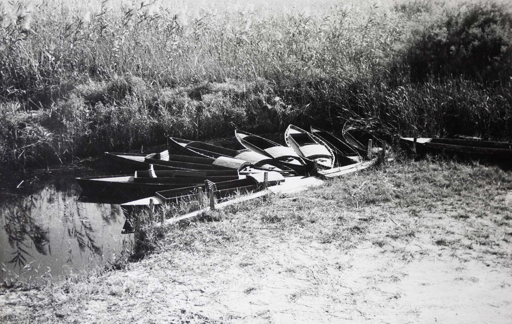

Foto: Salvador Maluquer (dècada de 1950 i 1960).
ELS CALAIXOS
La serenitat que desprenen les basses de Buda és assimilable a la catarsi. Les aigües minses, el xiuxiueig suau dels canyissars moguts per l’aire, l’olor dolça i penetrant, el cel que s’emmiralla tant si enlluerna el sol com si hi ha núvols, esdevenen un regal per als sentits
Els típics barquets de perxar són el mètode més eficaç per penetrar-hi. Un seguit de petits canals hi permeten accedir.

Navegació i passeig pels Calaixos de Buda.
Filmació: Artur Sarró (dècada de 1960)
Filmació: Artur Sarró (dècada de 1960)